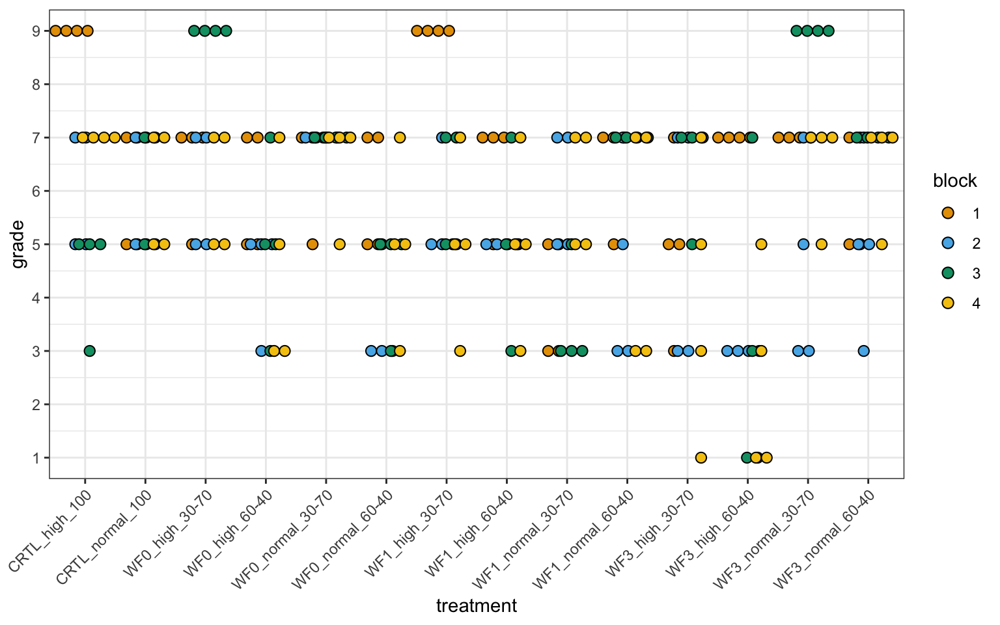

pacman::p_load(tidyverse, magrittr, readxl, see,
ordinal, parameters, emmeans, multcomp,
conflicted)
## resolve some conflicts with same function naming
conflict_prefer("select", "dplyr")5 Wurzelqualität in einem zweifaktoriellen Design
Version vom July 11, 2023 um 14:16:19
Wir wollen folgende R Pakete in diesem Kapitel nutzen.
Sehr häufig haben wir es auch in den Agrarwissenschaften mit Boniturnoten auf der Likert-Skala zu tun. Das heißt wir haben ein Outcome \(y\) mit Noten zwischen 1 und 9. Die ganzen Beobachtungen haben wir dann meist noch irgendwie in einem Block wiederholt. Neben den Problemen eine gute und richtige Bonitur praktisch durchzuführen, ist natürlich die Normalverteilung für das Outcome der Noten nicht gegeben. Wir könnten hier zum einen mit einem paarweisen Wilcoxon Rangsummentest ran oder aber wir nutzen die Funktion clm() aus dem R Paket ordnial für die Schätzung der Gruppenunterschiede. Wir nehmen hier mal die Funktion clm() da wir auch den Block mit ins Modell nehmen können.
Zuerst laden wir wieder die Daten. Dabei müssen wir dann noch die Notenspalte grade einmal als numerisch lassen und einmal in einen Faktor mutieren. Wir brauchen ein Faktor für die Funktion clm() aber eine numerische Variable für die Funktion ggplot(). Deshalb eben die Noten in einer doppelten Spalte.
root_tbl <- read_excel("data/root_2fac_data.xlsx") %>%
mutate(treatment = str_c(treatment, "_", fert, "_", mixture)) %>%
select(treatment, block, grade) %>%
mutate(grade_fctr = as_factor(grade),
block = as_factor(block))In Abbildung 5.1 sehen wir einmal die Abbildung der Noten. Wie immer sind über so viele Behandlungsstufen dann die Abbildungen sehr unübersichtlich. Ich nutze hier einen Dotplot, da du dann die einzelnen Beobachtungen besser sehen kannst. Wir sehen aber, dass es Effekte zwischen den Behandlungen gibt.
ggplot(root_tbl, aes(treatment, grade, fill = block)) +
theme_bw() +
geom_dotplot(binaxis = "y", stackdir='center',
position=position_dodge(0.6), dotsize = 0.75) +
scale_y_continuous(breaks = 1:9, limits = c(1,9)) +
scale_fill_okabeito() +
theme(axis.text.x = element_text(angle = 45, hjust=1))
Wir könnten jetzt einen Friedman Test rechen. Der Friedman Test ist das Äquivalent zur einer zweifaktorielle ANOVA. Wenn wir aber die Funktion friedman.test() durchführen sehen wir, dass wir kein complete block design vorliegen haben. Wir können hier also einen Friedman Test nicht rechnen.
friedman.test(grade_fctr ~ treatment | block, root_tbl)Error in friedman.test: not an unreplicated complete block design
Da es eben mit dem Friedman Test nicht geht, nutzen wir Cumulative Link Models mit der Funktion clm(). Die Modelle erlauben ein ordinales Outcome zusammen mit einem multiplen linearen Modell zu schätzen. Das ist was wir wollen, damit können wir den Block mit berücksichtigen. Dann geben wir mit threshold = "symmetric" noch an, dass die Abstände in unserem Outcome \(y\) symmetrisch sind. Die Abstände zwischen den Notenstufen sind ja immer gleich groß.
clm_fit <- clm(grade_fctr ~ treatment + block, data = root_tbl,
threshold = "symmetric")Mit dem Fit des Modells können wir dann auch eine ANOVA rechnen, um zu schauen, ob wir überhaupt einen signifikanten Effekt unser Behandlung vorliegen haben. Das haben wir, zum einen ist die Behandlung signifikant und leider auch der Block. Das ist natürlich nicht so schön. Eine Interaktion können wir nicht rechnen, da wir zu wenig Fallzahl vorliegen haben.
anova(clm_fit) %>%
model_parameters()Parameter | Chi2 | df | p
-------------------------------
treatment | 54.46 | 13 | < .001
block | 24.64 | 3 | < .001
Anova Table (Type 1 tests)Nun nutzen wir das Modell einmal um uns die compact letters wiedergeben zu lassen. Dafür nutzen wir wieder die Funktion emmeans() aus dem R Paket emmeans. Am Ende sortieren wir nochmal nach der Behandlung und dann lassen wir uns nur die Behandlung und die Buchstaben wiedergeben. Wenn du mehr möchtest, kannst du auch im Kapitel über die Posthoc Tests oder der ordinalen logistischen Regression mehr Optionen anlesen.
clm_fit %>%
emmeans(~ treatment) %>%
cld(Letters = letters) %>%
arrange(treatment) %>%
select(treatment, .group) treatment .group
1 CRTL_high_100 cde
2 CRTL_normal_100 bcde
3 WF0_high_30-70 e
4 WF0_high_60-40 abcd
5 WF0_normal_30-70 cde
6 WF0_normal_60-40 ab
7 WF1_high_30-70 bcde
8 WF1_high_60-40 abcde
9 WF1_normal_30-70 abc
10 WF1_normal_60-40 abcde
11 WF3_high_30-70 abcde
12 WF3_high_60-40 a
13 WF3_normal_30-70 de
14 WF3_normal_60-40 bcdeWenn wir für den Block mit adjustieren wollen würden, können wir den Aufruf wie folgt ändern emmeans(~ treatment | block). Leider erhalten wir dann in der df Spalte den Eintrag Inf für eng. infinity und das ist nie ein gutes Zeichen. Wir haben auch die sich immer gleich wiederholende Abfolge der compact letters. Also macht es mehr kaputt als heile und wir lassen das Modell so wie es ist. Wir nehmen den Block als reine Wiederholung mit in das Modell rein.